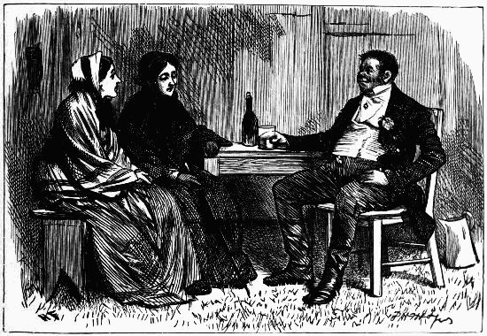
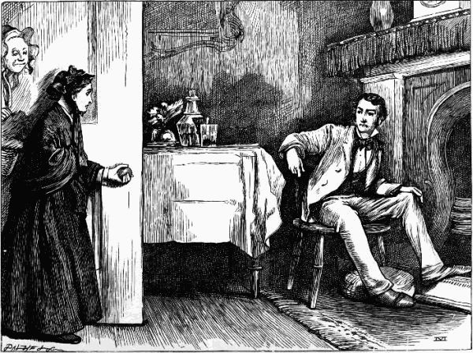
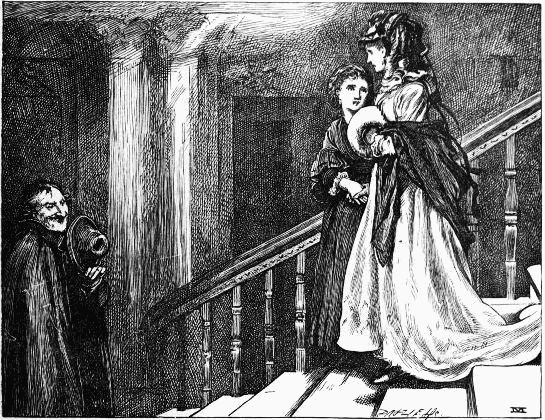
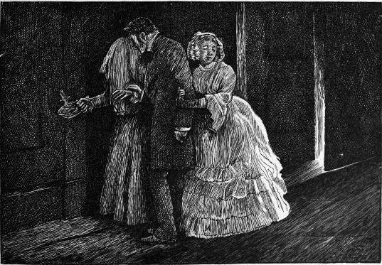

[390]
[391]
TWENTY ILLUSTRATIONS
BY H. FRENCH
"Louisa!! Thomas!"—Chap. iii.
"This is a very obtrusive lad!" said Mr. Gradgrind—Chap. vi.
"Heaven's mercy, woman!" he cried, falling farther off from the figure, "Hast thou come back agen!"—Chap. x.
"It would be a fine thing to be you, Miss Louisa!"—Chap. ix.
He felt a touch upon his arm—Chap. xii.
He went down on his knee before her on the poor mean stairs, and put an end of her shawl to his lips—Chap. xiv.
"What a comical brother-in-law you are!"—Book 2, chap. iii.
"Louisa, my dear, you are the subject of a proposal of marriage that has been made to me"—Chap. xv.
"This, sir," said Bounderby, "is my wife, Mrs. Bounderby"—Book 2, chap. ii.
"Heaven help us all in this world!"—Book 2, chap. v.
"Mrs. Bounderby, I esteem it a most fortunate accident that I find you alone here"—Book 2, chap. vii.
Mrs. Sparsit advanced closer to them—Book 2, chap. xi.
Left alone with her mother, Louisa saw her lying with an awful lull upon her face—Book 2, chap. ix
"I only entreat you to believe, my favourite child, that I have meant to do right"—Book 3, chap. i.
"You have seen me once before, young lady," said Rachael—Book 3, chap. iv.
 "Now, Thethilia, I don't athk to know any thecreth, but I thuppothe I may conthider thith to be Mith Thquire"—Book 3, chap. vii.
She stooped down on the grass at his side, and bent over him—Book 3, chap. vi.
Here was Louisa, on the night of the same day, watching the fire as in the days of yore—Book 3, chap. ix.
He drew up a placard, offering twenty pounds reward, for the apprehension of Stephen Blackwood—Book 3, chap. iv.
FIFTY-EIGHT ILLUSTRATIONS
BY J. MAHONEY
In Marseilles that day there was a villainous prison. In one of its chambers, so repulsive a place, that even the obtrusive stars blinked at it, and left it to such refuse of reflected light as it could find for itself, were two men—Book 1, chap. i.
"Nothing changed," said the traveller, stopping to look round. "Dark and miserable as ever"—Book 1, chap. iii.
The observer stood with her hand upon her own bosom, looking at the girl—Book 1, chap. ii.
"But what—hey?—Lord forgive us!"—Mrs. Flintwinch muttered some ejaculation to this effect, and turned giddy—for Mr. Flintwinch awake, was watching Mr. Flintwinch asleep—Book 1, chap. iv.
They looked tempting; eight in number, circularly set out on a white plate, on a tray covered with a white napkin, flanked by a slice of buttered french roll and a little compact glass of cool wine and water—Book 1, chap. v.
"Give me the money again," said the other eagerly, "And I'll keep it and never spend it"—Book 1, chap. vi.
In the back garret—a sickly room, with a turned up bedstead in it, so hastily and recently turned up that the blankets were boiling over, as it were, and keeping the lid open—a half finished breakfast of coffee and toast, for two persons, was jumbled down anyhow on a rickety table—Book 1, chap. ix.
"Is it," said Barnwell Junior, taking heed of his visitor's brown face, "anything—about—tonnage—or that sort of thing?"—Book 1, chap. x.
One man, slowly moving on towards Chalons, was the only visible figure on the landscape. Cain might have looked as lonely and avoided—Book 1, chap. xi.
And stooping down to pinch the cheek of another young child who was sitting on the floor, staring at him, asked Mrs. Plornish how old that fine boy was? "Four year, just turned, sir," said Mrs. Plornish. "He's a fine little fellow, a'int he, sir, but this one is rather sickly." She tenderly hushed the baby in her arms as she said it—Book 1, chap. xi.
The parlour fire ticked in the grate. There was only one person on the parlour hearth, and the loud watch in his pocket ticked audibly. The servant maid had ticked the two words, "Mr. Clennam," so softly, that she had not been heard; and he consequently stood, within the door she had closed, unnoticed—Book 1, chap. xiii.
 His door was softly opened, and these spoken words startled him, and came as if they were an answer, "Little Dorrit"—Book 1, chap. xiii.
They went to the closed gate, and peeped through into the courtyard. "I hope he is sound asleep," said Little Dorrit, kissing one of the bars, "and does not miss me." The gate was so familiar, and so like a companion, that they put down Maggy's basket in a corner to serve for a seat, and keeping close together, rested there for some time—Book 1, chap. xiv.
Then the bell rang once more, and then once more, and then kept on ringing; in despite of which importunate summons, Affery still sat behind her apron, recovering her breath. At last Mr. Flintwinch came shuffling down the staircase into the hall, muttering and calling "Affery woman!" all the way. Affery still remaining behind her apron, he came stumbling down the kitchen stairs, candle in hand—Book 1, chap. xv.
As Arthur came over the style and down to the water's edge, the lounger glanced at him for a moment and then resumed his occupation of idly tossing stones into the water with his foot.—Book 1, chap. xvii.
"O don't cry!" said Little Dorrit piteously. "Don't, don't! Good-bye, John. God bless you!" "Good-bye, Miss Amy. Good-bye!" And so he left her—Book 1, chap, xviii.
As she stood behind him, leaning over his chair so lovingly, he looked with downcast eyes at the fire. An uneasiness stole over him that was like a touch of shame; and when he spoke, as he presently did, it was in an unconnected and embarrassed manner—Book 1, chap. xix.
They spoke no more, all the way back to the lodging where Fanny and her uncle lived. When they arrived there they found the old man practising his clarionet in the dolefullest manner in a corner of the room—Book 1, chap. xx.
Arthur Clennam with the card in his hand, betook himself to the address set forth on it, and speedily arrived there. It was a very small establishment, wherein a decent woman sat behind the counter working at her needle—Book 1, chap. xxii.
"What nimble fingers you have," said Flora, "but are you sure you are well?" . . . "Oh yes, indeed!" Flora put her feet upon the fender and settled herself for a thorough good romantic disclosure—Book 1, chap. xxiv.
Mounting to his attic, attended by Mrs. Plornish as interpreter, he found Mr. Baptist with no furniture but his bed on the ground, a table and a chair, carving with the aid of a few simple tools, in the blithest way possible. "Now, old chap," said Mr. Pancks, "pay up!"—Book 1, chap. xxxiii.
Mr. Doyce had been to Twickenham to pass the day. Clennam had excused himself, Mr. Doyce was just come home. He put in his head at the door of Clennam's sitting-room to say good night. "Come in, come in!" said Clennam—Book 1, chap. xxvi.
He was slowly resuming his way, when he saw a figure in the path before him which he had, perhaps, already associated with the evening and its impressions. Minnie was there alone—Book 1, chap. xxviii.
Why she should then stoop down and look in at the key-hole of the door, as if an eye would open it, it would be difficult to say. From this posture she started suddenly, with a half scream, feeling something on her shoulder. It was the touch of a hand; of a man's hand—Book 1, chap. xxix.
The stranger, taking advantage of this fitful illumination of his visage, looked intently and wonderingly at him—Book 1, chap. xxx.
On their arrival at Mr. Blandois's room, a bottle of port wine was ordered by that gallant gentleman; who coiled himself up on the window-seat, while Mr. Flintwinch took a chair opposite to him, with the table between them—Book 1, chap. xxx.
They were within five minutes of their destination, when, at the corner of her own street, they came upon Fanny, in her new bonnet, bound for the same port—Book 1, chap. xxxi.
"Dear Little Dorrit, let me lay it down." She yielded to him, and he put it aside! Her hands were then nervously clasping together—Book 1, chap. xxxii. 
"What a good fellow you are, Clennam!" exclaimed the other stopping to look at him, as if with irrepressible admiration. "What a capital fellow! You have never been disappointed. That's easy to see."—Book 1, chap. xxxiv.
Worn out with her own emotions, and yielding to the silence of the room, her hand slowly slackened and failed in its fanning movement, and her head dropped down on the pillow at her father's side. Clennam rose softly, opened and closed the door without a sound—Book 1, chap. xxxv.
 Through these spectators, the little procession, headed by the two brothers, moved slowly to the gate. Mr. Dorrit, yielding to the vast speculation how the poor creatures were to get on without him, was great, and sad, but not absorbed—Book 1, chap. xxxvi.
Through these spectators, the little procession, headed by the two brothers, moved slowly to the gate. Mr. Dorrit, yielding to the vast speculation how the poor creatures were to get on without him, was great, and sad, but not absorbed—Book 1, chap. xxxvi.
"Permit me!" said the traveller, rising and holding the door open. "Good repose! To the pleasure of seeing you once more! To to-morrow!" As he kissed her hand, with his best manner, and his daintiest smile, the young lady drew a little nearer to her father, and passed him with a dread of touching him—Book 2, chap. i.
Nevertheless, as they wound round the rugged way while the convent was yet in sight, she more than once looked round, and descried Mr. Blandois, backed by the convent smoke which rose high from the chimneys in a golden film, always standing on one jutting point looking down after them—Book 2, chap. iii.
"It ought to bring a judgment on us. Brother, I protest against it in the sight of God!" As his hand went above his head and came down upon the table, it might have been a blacksmith's—Book 2, chap. v.
Little Dorrit was in front, with her brother and Mrs. General (Mr. Dorrit had remained at home). But on the brink of the quay, they all came together. She started again to find Blandois close to her, handing Fanny into the boat—Book 2, chap. vi.
"Good-bye, my love! Good-bye!" The last words were spoken aloud as the vigilant Blandois stopped, turned his head, and looked at them from the bottom of the staircase—Book 2, chap. vii. 
He stopped at the corner, seeming to look back expectantly up the street as if he had made an appointment with some one to meet him there; but he kept a careful eye on the three. When they came together, the man took off his hat and made Miss Wade a bow—Book 2, chap. ix.
"Despatch then! Achieve then! Bring Mr. Flintwinch! Announce me to my lady!" cried the stranger, clanking about the stone floor. "Pray tell me, Affery," said Arthur aloud and sternly, as he surveyed him from head to foot with indignation, "who is this gentleman?"—Book 2, chap. x.
 There is a curtain, more dirt-coloured than red, which divides it, and the part behind the curtain makes the private sitting-room. When I first saw her there she was alone, and her work had fallen out of her hand, and she was looking up at the sky shining through the tops of the windows—Book 2, chap. xi.
There is a curtain, more dirt-coloured than red, which divides it, and the part behind the curtain makes the private sitting-room. When I first saw her there she was alone, and her work had fallen out of her hand, and she was looking up at the sky shining through the tops of the windows—Book 2, chap. xi.
"And you have really invested," Clennam had already passed to that word, "your thousand pounds, Pancks?" . . . "To be sure, sir!" replied Pancks boldly, with a puff of smoke, "and only wish it ten."—Book 2, chap. xiii.
Little Dorrit used to sit and muse here, much as she had been used to while away the time on her balcony in Venice. Seated thus one day, she was softly touched on the shoulder, and Fanny said, "Well, my dear," and took her seat at her side—Book 2, chap. xiv.
"To preserve your approbation, Mrs. General," said Fanny, returning the smile with one in which there was no trace of those ingredients, "will of course be the highest object of my married life; to lose it, would of course be perfect wretchedness"—Book 2, chap. xv.
"Where is this missing man? Have you come to give us information where he is? I hope you have." "So far from it, I—hum, have come to seek information." . . . "Unfortunately for us, there is none to be got here. Flintwinch, show the gentleman the hand-bill. Give him several to take away. Hold the light for him to read it"—Book 2, chap. xvii.
The sun had gone down full four hours, and it was later than most travellers would like it to be for finding themselves outside the walls of Rome, when Mr. Dorrit's carriage, still on its last wearisome stage, rattled over the solitary campagna—Book 2, chap. xix.
As each of the two handsome faces looked at each other, Clennam felt how each of the two natures must be constantly tearing the other to pieces—Book 2, chap. xx.
One figure reposed upon the bed, the other kneeling on the floor, drooped over it the arms easily and peacefully resting on the coverlet; . . . the two brothers were before their Father; far beyond the twilight judgments of this world; high above its mists and obscurities—Book 2, chap. xix.
After one of the nights that I have spoken of, I came down into a greenhouse before breakfast. Charlotte (the name of my false young friend) had gone down before me, and I heard her aunt speaking to her about me, as I entered. I stopped where I was, among the leaves and listened—Book 2, chap. xxi.
 "If I draw you into this black closet and speak here." . . . "Why do you hide your face?" . . . "Because I am afraid of seeing something." . . . "You can't be afraid of seeing anything in this darkness, Affery"—Book 2, chap. xxiii.
"He couldn't have a better nurse to bring him round," Mr. Sparkler made bold to opine. . . . "For a wonder I can agree with you," returned his wife, languidly turning her eyelids a little in his direction, "and can adopt your words"—Book 2, chap. xxiv.
The day was sunny, and the Marshalsea, with the hot noon striking upon it was unwontedly quiet. Arthur Clennam dropped into a solitary arm-chair, itself as faded as any debtor in the gaol, and yielded himself to his thoughts—Book 2, chap. xxvii.
He arose and opened it, and an agreeable voice accosted him with "How do you do, Mr. Clennam? I hope I am not unwelcome in calling to see you." It was the sprightly young Barnacle, Ferdinand—Book 2, chap. xxviii.
And she came towards him with her hands laid on his breast to keep him in his chair, and with her knees upon the floor at his feet, and with her lips raised up to kiss him, and with her tears dropping on him as the rain from heaven had dropped upon the flowers, Little Dorrit, a loving presence, called him by his name—Book 2, chap. xxix.
In a moment, Affery had thrown the stocking down, started up, caught hold of the window-sill with her right hand, lodged herself upon the window seat with her right knee, and was flourishing her left hand, beating expecting assailants off—Book 2, chap. xxx. 
The sun had set, and the streets were dim in the dusky twilight, when the figure, so long unused to them, hurried on its way—Book 2, chap. xxxi.
Mr. Pancks and the patriarch were instantly the centre of a press, all eyes and ears; windows were thrown open, and doorsteps were thronged—Book 2, chap. xxxii.
Such a box had Affery Flintwinch seen in the first of her dreams, going out of the old house . . . this, Tattycoram put on the ground at her old master's feet; this, Tattycoram fell on her knees by, and put her hands upon. . . .—Book 2, chap. xxxiii.
Little Dorrit and her husband walked out of the church alone—Chap. xxxiv.
NINE ILLUSTRATIONS
BY E. G. DALZIEL
The moment comes, the fire is dying—and the child is dead—The Long Voyage
"Oh, git along with you, sir, if you please, me and Mrs. Bigby don't want no male parties here"—Births—Mrs. Meeks of a son
"Look at the snivelling milksop," said my uncle—The Poor Relation's Story
In the midst of the kitchen . . . sits a young, modest, gentle-looking creature, with a beautiful child in her lap—On Duty with Inspector Field
"Whether he was the vicar, or Moses, or Mr. Burchill, or a conglomeration of all four, I knew not"—The Ghost of Art
 "Are you from the country, young man?" "Yes," I say, "I am"—The Detective Police
"Are you from the country, young man?" "Yes," I say, "I am"—The Detective Police
"In another room were several ugly old women crouching, witch-like, round a hearth, and chatting and nodding, after the manner of monkeys"—A Walk in a Workhouse
"Mr. Blinkins, are you ill, sir?"—Our School
He took her in his arms and told her it was fancy—A Christmas Tree